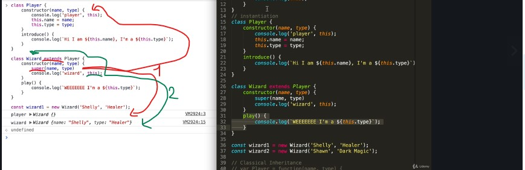

Reference type
- [] === [] => false
- [1] === [1] => false
because arrays are objects and each array is a different box(data structure)
- const arr1 = [1]
- const arr2 = arr1
arr1 === arr2 - true - both reference to the same box
- arr3 = [1]
- arr3 === arr1 - false - there are 2 different boxes - although the content is the same
Context vs scope
Scope
- function b() {
- const a = 13;}
- console.log(a); => a is not defined - because it only exists inside the function
Context
- const c = { b: function(){ console.log(this)} - this returns the context/ object inside whom it is = object c
Instantiation - the process of doing many copies of an object using classes
